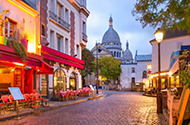
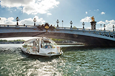

-
Paseo en el barco el Sena
Tanto de día como de noche, recorrer el río Sena en barco es una experiencia imprescindible para descubrir la belleza de París desde una perspectiva única. La embarcación es panorámica e incluye comentarios en español .
-
Autobús turístico de París
El autobús turístico de París es una forma práctica de recorrer los principales lugares de interés de la ciudad de la luz. Podréis subir y bajar en cualquiera de sus paradas para explorar la capital francesa a vuestro aire.
-
Entrada a la 2ª planta de la Torre Eiffel sin colas
Con esta entrada a la segunda planta de la Torre Eiffel contemplaréis unas espectaculares vistas de París desde su monumento más icónico. Además, os ahorraréis las interminables colas.
-
Free tour por París
Este free tour por París es una forma ideal de comenzar a descubrir la capital francesa. Veremos por fuera lugares como el Pont Neuf, el Louvre, el Sena o Notre Dame.
-
Excursión al Palacio de Versalles
En esta excursión desde París conoceremos el lujoso Palacio de Versalles, declarado Patrimonio de la Humanidad hace más de 30 años. Descubriremos sus salas más importantes y recorreremos sus impresionantes jardines.
-
Visita guiada por el Museo del Louvre
En esta visita guiada por el Museo del Louvre de París recorreremos una de las pinacotecas más importantes del mundo, donde destacan grandes obras de artistas como Da Vinci, Tiziano o Delacroix.
-
Crucero por el Sena con cena gourmet
¿Buscando un plan romántico en la ciudad del amor? En este crucero por el Sena con cena gourmet admiraréis la iluminación de los monumentos de París mientras disfrutáis de un menú de lujo en un barco panorámico.
-
Entradas para el Moulin Rouge
Asistir a un espectáculo en el Moulin Rouge es una experiencia que hay que vivir al menos una vez en la vida. Descubriréis el fascinante show “Féerie” representado en el mítico cabaret de Montmartre.
-
Entrada al Arco del Triunfo sin colas
El Arco del Triunfo de París es uno de los emblemas monumentales de la capital francesa. Con esta entrada podréis visitar su mirador y su exposición sin tener que esperar colas.
-
Excursión al Mont Saint Michel
En esta excursión desde París visitaremos el Mont Saint Michel, una de las atracciones turísticas más populares de Francia. La isla, declarada Patrimonio de la Humanidad por la Unesco.
-

Free tour por Montmartre
Recorreremos uno de los barrios más artísticos de París en este free tour por Montmartre. Pasaremos junto a los cabarets más importantes y los cafés más alternativos de la capital francesa .
-
Entrada a la Sainte Chapelle sin colas
Con esta entrada visitaréis la Sainte Chapelle y os adentraréis en una de las joyas del gótico, donde os aguardan vidrieras de altura y uno de los grandes tesoros de la Cristiandad.
-

Barco turístico de París Batobus
Navegando por el río Sena a bordo del Batobus, el barco turístico de París, podréis subir y bajar tantas veces como queráis durante 24 o 48 horas.